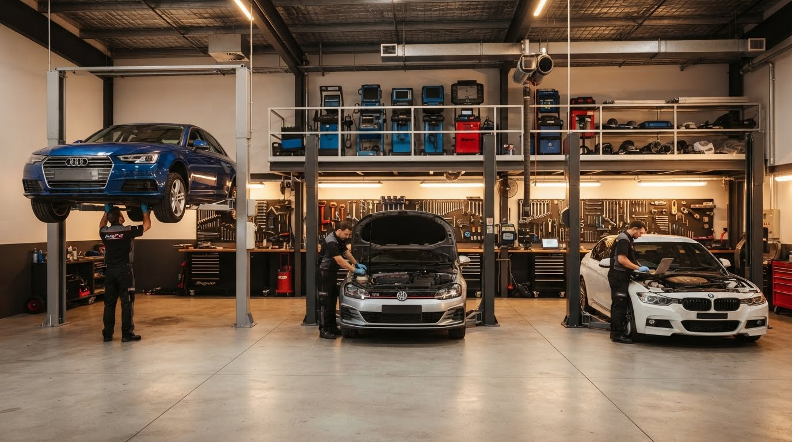

Vehículos en Taller
8
En proceso de reparación hoy.

Bienvenido al sistema de administración de reparaciones, diagnósticos y mantenimiento automotriz.
8
En proceso de reparación hoy.
5
Pendientes para revisión general.
3
Vehículos listos para recoger.